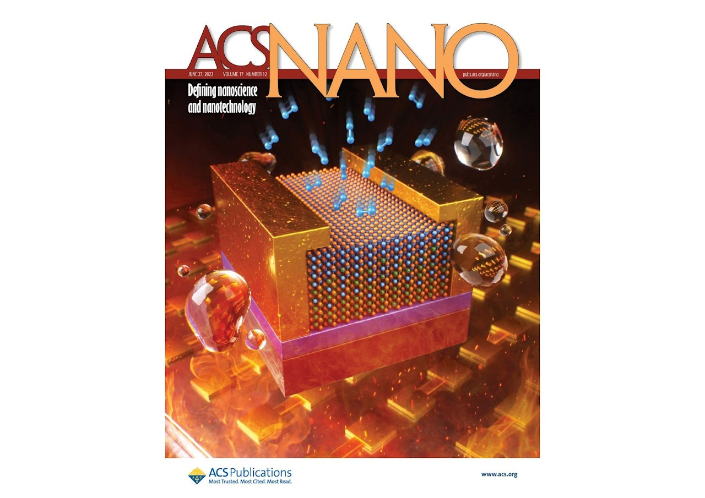
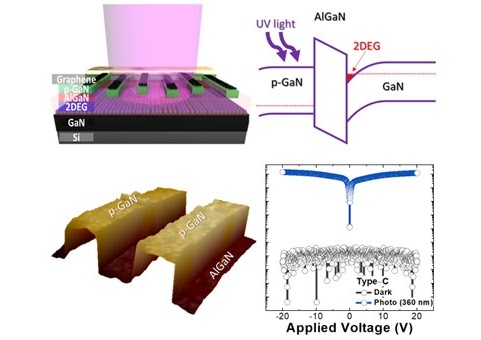

2023
[37] (앞표지 안쪽) Se-Vacancy Healing with Substitutional Oxygen in WSe2 for High-Mobility p-Type Field-Effect Transistors, ACS Nano, 5월 (2023)
Haewon Cho, Mayuri Sritharan, Younghyun Ju, Pavan Pujar, Riya Dutta, Woo-Sung Jang, Young-Min Kim, Seongin Hong (Corresponding), Youngki Yoon, Sunkook Kim

[36] Highly Sensitive Ultraviolet Photodetector Based on an AlGaN/GaN HEMT with Graphene-on-p-GaN Mesa Structure, Advanced materials interfaces, 3월 (2023)
Bhishma Pandit, Hyeon-Sik Jang, Yunjo Jeong, Sangmin An, S. Chandramohan, Kyung Kyu Min, Sang Min Won, Chel-Jong Choi, Jaehee Cho, Seongin Hong (Corresponding), Keun Heo
